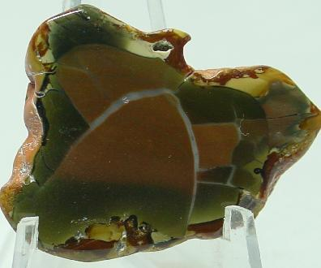

Hart
Mountain Jasper
Hart Mountain
Jasper is found in Southeastern Oregon and is known as the original
"porclean jasper". You need to be part mountain-goat
to find this jasper as it occurs above the 7,000ft elevation mark
on Hart Mountain.

For pricing
information , email us
available
here
Home|
Jasper | Agates
| Opal | Facet Materials | Finished
Gems | Finished Jewelry
Collectables & Collections
| Specials | Equipment
| People Stories
Ordering Info | E-mail
Us